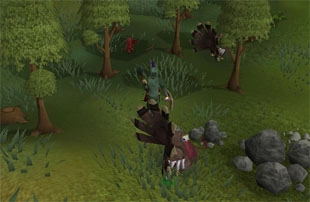

<div id="content">
<div id="article">
<div class="sectionHeader">
<div class="left">
<div class="right">
<h1 class="plaque">
26-Nov-2020
</h1>
</div>
</div>
</div>
<div class="section">
<div class="brown_background">
</div>
<div id="contrast_panel">
<div id="infopane">
<div class="title thrd">Happy Thanksgiving</div>
<div class="about">
</div>
</div>
<div class="phold" id="nocontrols"></div>
<div class="actions" id="top">
<table>
<tr>
<td class="commands center">
<ul class="flat first-child">
<li><a href="./archives.html"> Back to Update List</a></li>
<li>
<a href="/"> Refresh</a>
</li>
</ul>
</td>
</tr>
<tr>
</tr>
</table>
</div>
<div class="" id="contentmsg">
<a class="msgplace" name="0"></a>
<table cellspacing="0" class="message jmod">
<tr>
<td class="leftpanel J-Mod">
<div class="msgcreator uname">
 
Red Bracket
</div>

<div class="modtype">Website Maintainer</div>
<div class="msgcommands">
<br/>
</div>
</td>
<td class="rightpanel">
<div class="msgtime">
19-Nov-2020 00:00:00
<br/>
</div>
<div class="msgcontents">
<!-- Post goes right in here -->
<p>Thanksgiving is about to get a whole lot better!</p>
<p>
                                    On behalf of the whole 2009scape team, we all wish you a wonderful Thanksgiving -
                                    and even if you don't celebrate it, we've got something else in store you'll be
                                    celebrating!
                                  </p>
<p>
<b><u>Updates:</u></b>
</p><li>Fully implemented all gnome cooking</li>
<li>Fully implemented Gnome Restaurant minigame</li>
<li>Added functionality for Grand Seed Pod</li>
<li>Elven lands have been populated!</li>
<li>Player customization interfaces have been fully implemented</li>
<ul>
</ul>
<p>
<b><u>Patch Notes:</u></b>
</p><li>Enchant jewelry tabs now function</li>
<li>Fishing spots worldwide have been corrected/added</li>
<li>Rates for barrows items have been nerfed</li>
<li>Barrows prayer drain now ticks less frequently</li>
<li>Removed doors temporarily from POH</li>
<li>Adventurer bots have been refined and updated</li>
<li>Clue scroll rewards have been completely reworked</li>
<li>You can now obtain a puppy from the pet shop in Taverly</li>
<li>Fairy Ring interface has been completely fixed (with travel log sorting as well)
                                    </li>
<li>Fixed make-all bug with single-item skill dialogues</li>
<li>White Wolf/Ice Mountain destinations for the Keldagrim Cart System now go to the
                                      proper location</li>
<li>Fixed MSB-related tasks in Seer's Hard Diary</li>
<li>Custom Fur Clothing interface has been completely and fully implemented (fancy
                                      dress shop owner in Varrock)</li>
<br class="clear"/>
<p>
                                    Enjoy!
                                  </p>
<div style="text-align: center">

</div>
<p>
</p></div>
</td>
</tr></table>
</div>
<div class="actions" id="bottom">
<table>
<tr>
<td class="commands center">
<ul class="flat first-child">
<li><a href="./archives.html"> Back to Update List Achive</a></li>
<li>
<a href="/"> Refresh</a>
</li>
</ul>
</td>
</tr>
<tr>
</tr>
</table>
</div>
</div>
</div>
</div>
</div>